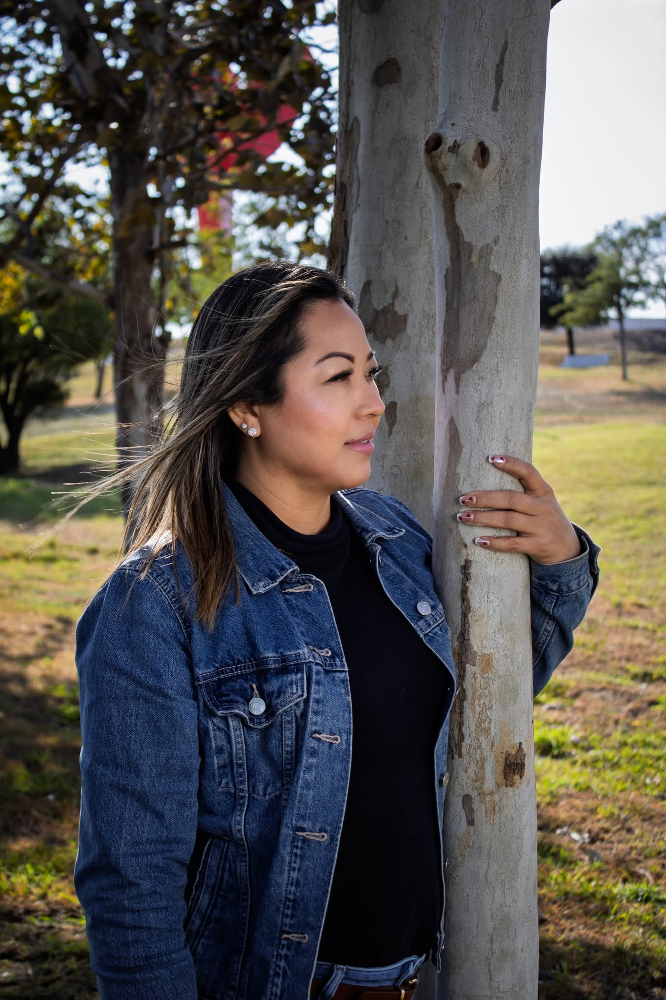

Retrato Urbano al Aire Libre

Descripción del Proyecto
Sesión de retrato casual realizada al aire libre en parque natural[cite: 5]. Se trabajó con encuadre plano medio y profundidad de campo reducida para destacar la figura de la modelo frente al entorno natural[cite: 5].
Ficha Técnica:
- Categoría: Retrato Casual / Urbano
- Iluminación: Luz natural / Exterior
- Edición: Calibración de tonos y nitidez en Adobe Lightroom
- Encuadre: Plano medio apoyado en entorno